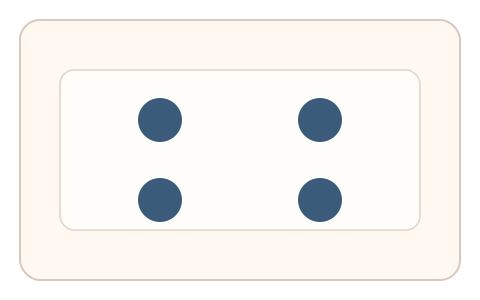
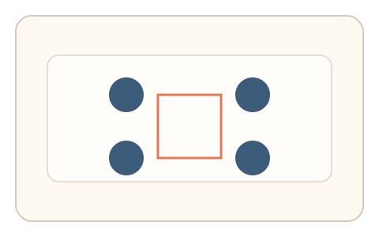
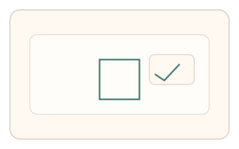

#53
视觉思考范式：扫描/错觉/全局-局部
已扩展
虚轮廓补全描绘
展示 Kanizsa 类图形并描绘虚轮廓，利用补全连贯度与路径特征验证真实性。
概念原文
给出 Kanizsa 类虚轮廓图形，用户描出“感觉存在”的轮廓边缘；系统评估描绘路径与补全连贯度。
以“知觉补全痕迹”作为人类特征。
研究背景
Kanizsa 虚轮廓会诱发人类的知觉补全，形成主观边缘与形状。通过记录描绘路径与连贯度，可获得稳定的补全特征。
核心机制
- 呈现 Kanizsa 类虚轮廓图形。
- 用户描绘主观感受到的轮廓边缘。
- 记录路径连贯性与速度变化。
- 分析补全连贯度与偏差。
用户流程
- 步骤 1：用户看到虚轮廓图形。
- 步骤 2：用户描绘感知到的边缘。
- 步骤 3：系统分析路径并判定。
判定信号
补全路径的连贯性
真实补全通常呈现连续且平滑的路径。
起笔延迟与描绘速度
真实补全会在短暂犹豫后快速描绘。
判定逻辑
结合路径连贯度与时序节律判定；过度机械或随机化判异常。
对抗面
- 脚本按几何规则直接描绘
- 重放真实用户的描绘轨迹
防御与缓解
- 随机化虚轮廓形态与遮挡位置
- 加入轻微噪声与位置抖动
- 叠加微时序与轨迹抖动进行多信号判定
可达性与风险
提供点击选择轮廓的替代模式，避免对绘制能力受限用户造成负担。
- 部分用户对虚轮廓不敏感导致误拒
- 触控设备描绘精度影响特征稳定性
可视化状态

状态 1：虚轮廓图形
Kanizsa 类图形诱发补全。

状态 2：补全描绘
用户描绘感知到的轮廓。

状态 3：补全判定
分析连贯度与路径特征。
参考资料
Illusory contours
说明 Kanizsa 虚轮廓与补全现象。
Gestalt psychology
说明整体知觉与补全机制。